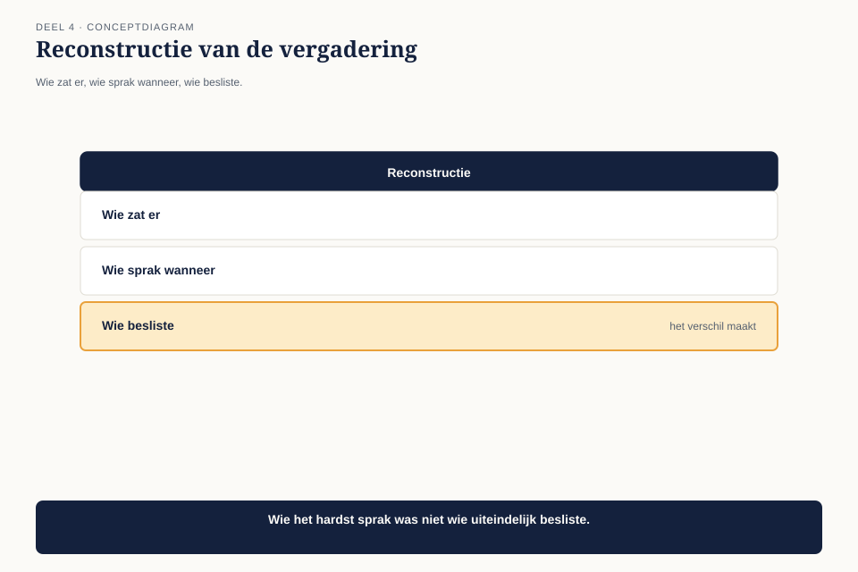
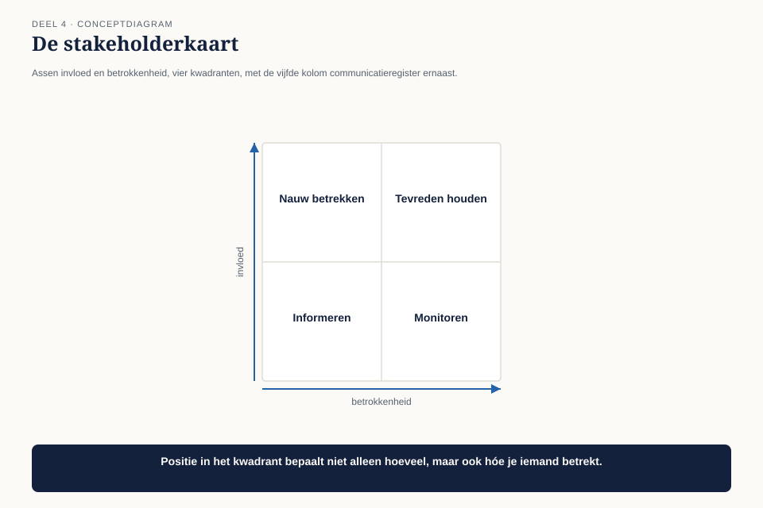

Deel 4 — Human Dynamics I: stakeholders
Niveau 1 — De kern | Deelnemersreader BTABoK-cursus, Ductus
4.1 Waar dit deel over gaat
We verlaten Business Technology Strategy en betreden de pijler die in deel 1 als winnaar uit de telling kwam: Human Dynamics. Zeven competenties, waarvan we er in dit deel en het volgende twee grondig behandelen: cultuur lezen en klantrelaties in dit deel, samenwerken, onderhandelen, presenteren en schrijven in deel 5.
Dit deel gaat niet over aardig gevonden worden. Het gaat over een vaardigheid die net zo systematisch te leren is als het waarderingsblad uit deel 3: weten wie welke stem heeft, en je gedrag daarop afstemmen zonder je inhoud te verkopen.
Aan het eind van dit deel kun je:
- een stakeholderkaart opstellen die invloed en betrokkenheid uit elkaar houdt;
- per stakeholder bepalen wat hij moet weten, in welke vorm en op welk moment;
- het verschil toepassen tussen een stakeholder en een klant;
- organisatiecultuur lezen aan de hand van wat er gebeurt, niet aan de hand van wat er beweerd wordt;
- verklaren waarom een inhoudelijk juist bezwaar toch kan verdwijnen, en wat daaraan te doen is.
4.2 De vergadering, opnieuw bekeken
Terug naar de portefeuilleraad uit deel 1. Claudette’s bezwaar tegen een besluit belandde niet in de notulen. We wisten toen nog niet waarom. Nu wel.

De vergadering telt acht deelnemers. Claudette spreekt haar bezwaar uit op het moment dat de voorzitter — de directeur Uitvoering — het besluit als afgerond samenvat en naar het volgende agendapunt wil. Haar bezwaar is inhoudelijk correct: het raakt precies het koppelvlak dat in deel 2 en 3 is uitgewerkt. Maar ze brengt het in als losse zin, na de samenvatting, gericht tot de notulist in plaats van tot de voorzitter, zonder dat iemand haar heeft aangekeken.
De notulist schrijft: “Diverse aandachtspunten genoemd.” Geen naam, geen inhoud, geen actiehouder.
Dit is niet oneerlijk van de notulist. Het is een correcte weergave van wat er feitelijk gebeurde: een opmerking zonder eigenaar, op het verkeerde moment, aan de verkeerde persoon gericht.
Dit is observatie O4: de business ervaart Claudette als een obstakel. Ze wordt te laat betrokken, en als ze betrokken wordt, is dat als toetser.
4.3 Wat de BoK onder een stakeholder verstaat
De BTABoK behandelt stakeholders als een competentie binnen het operating model: stakeholdergedreven architectuur is niet een aardige toevoeging maar de manier waarop architectuurwerk zijn mandaat krijgt. Een architect die zijn stakeholders niet kent, werkt in feite voor niemand — en wordt dus door iedereen als hindernis ervaren zodra hij zich met iets bemoeit.
Een stakeholder is niet hetzelfde als een klant, en niet hetzelfde als “iedereen die met het onderwerp te maken heeft”. Een bruikbare definitie: iemand die invloed heeft op je besluit, of op wie je besluit invloed heeft — ongeacht of hij daar zelf iets van vindt.
Dat criterium is ruimer dan de meeste mensen denken. De deelnemer bij Meridiaan is een stakeholder van een architectuurbesluit over de uitkeringsstraat, ook al zit hij nooit in een vergadering. De voorzitter van de portefeuilleraad is een stakeholder, ook al gaat het besluit inhoudelijk niet over zijn afdeling — hij heeft de macht om het van de agenda te halen.
4.4 De stakeholderkaart
Om dit systematisch te maken gebruiken we een blad met twee assen en één extra kolom die het verschil maakt tussen een kaart die je opbergt en een kaart die je gebruikt.

As 1 — invloed. Kan deze persoon je besluit tegenhouden, vertragen of forceren? Dit is een feit over macht, geen oordeel over verdienste.
As 2 — betrokkenheid. Hoeveel raakt de uitkomst hem persoonlijk of professioneel? Dit is een feit over belang, los van invloed.
| Betrokkenheid laag | Betrokkenheid hoog | |
|---|---|---|
| Invloed hoog | tevreden houden — informeer kort, vraag niets, verras nooit | nauw betrekken — samen beslissen, vroeg informeren |
| Invloed laag | monitoren — geen actie nodig, wel in de gaten houden | informeren — betrek inhoudelijk, geef geen doorslag |
De vijfde kolom is waar het echte werk zit: wat moet deze persoon weten, in welke vorm, en op welk moment vóór het besluit — niet erna.
Bij de directeur Uitvoering (hoog/hoog): een vooraankondiging, één op één, minstens twee dagen voor de vergadering, met het besluit dat gevraagd wordt expliciet benoemd. Niet een losse zin ná zijn samenvatting.
De fout die Claudette maakte was geen inhoudelijke fout. Ze had de juiste analyse. Ze had de verkeerde plek in de kaart voor het moment waarop ze sprak: ze behandelde de directeur Uitvoering alsof hij in het kwadrant “informeren” zat — iemand die je terloops bijpraat — terwijl hij feitelijk in “nauw betrekken” zit. Dat vergde een gesprek vóór de vergadering, niet een opmerking erin.
4.5 De klant is nooit intern
In deel 1 kwam deze tenet al langs als provocatie. Hier wordt hij een werkinstrument.
Het onderscheid: een stakeholder heeft invloed op of belang bij je besluit. Een klant is degene voor wie je werkt — bij Meridiaan: het fondsbestuur, uiteindelijk gedragen door wat de deelnemer ervaart. Een collega-afdeling is een stakeholder, geen klant, ook al noemt iedereen elkaar tegenwoordig “interne klant”.
Waarom dit ertoe doet: als je een collega-afdeling als klant behandelt, ga je haar tevreden houden in plaats van haar eisen wegen tegen de echte klant. Bij Meridiaan betekent dat concreet: de manager Klantbediening wil snelheid voor zijn team; de deelnemer wil correctheid. Die twee botsen soms. Als je de manager als klant behandelt, wint snelheid altijd. Als je hem als stakeholder behandelt — invloedrijk, betrokken, met een gerechtvaardigd maar niet doorslaggevend belang — kun je zijn wens wegen tegen wat de eigenlijke klant nodig heeft.
Dit is precies waarom “de rem” genoemd worden (uit deel 1) niet per se een teken is dat je het verkeerd doet.
4.6 Cultuur lezen
De tweede competentie in dit deel is minder instrumenteel en moeilijker te trainen: cultuur lezen. De BoK plaatst dit onder Human Dynamics als managing the culture — niet cultuur veranderen, eerst cultuur herkennen.
De regel die het werkbaar maakt: kijk naar wat er gebeurt, niet naar wat er wordt gezegd. Elke organisatie heeft een gepubliceerde cultuur (kernwaarden op de website, een missie op een poster) en een werkelijke cultuur (wat feitelijk wordt beloond en afgestraft). Het verschil daartussen is precies waar architecten in vastlopen, omdat ze op de gepubliceerde cultuur varen.

Drie observeerbare signalen, toegepast op Meridiaan:
| Signaal | Wat je waarneemt | Wat het onthult |
|---|---|---|
| Wat wordt te laat aangekondigd | agendapunten die pas op de vergadering zelf compleet worden toegelicht | wie er echt over gaat, besluit vooraf al informeel |
| Wie onderbreekt wie | de voorzitter onderbreekt inhoudsdeskundigen, niet andandersom | status weegt zwaarder dan argument in deze zaal |
| Wat er gebeurt na een fout | zoeken naar wie het heeft veroorzaakt, in plaats van wat het kostte | de cultuur is afrekenend, niet lerend — mensen zullen problemen daarom laat melden, niet vroeg |
Het derde signaal verklaart iets dat verderop in de cursus terugkomt: als de cultuur afrekenend is, is “vroeg melden” een persoonlijk risico voor de melder. Dat is geen persoonlijk kenmerk van individuele medewerkers maar een rationele reactie op de omgeving — en het is precies waarom O6, de ontbrekende besluitvorming, kon ontstaan: niemand legt vast waarom iets misging, omdat vastleggen een schuldvraag oproept.
Waarschuwing. Cultuur lezen is geen vrijbrief om je aan te passen aan alles wat je ziet. Het is een diagnose-instrument. Wat je ermee doet — aanpassen, tegenspreken, of geduldig ondermijnen — is een apart besluit, en de code uit deel 1 stelt daar grenzen aan.
4.7 Peer-interactie
De derde competentie in dit deel gaat over de omgang met andere architecten en technische collega’s, en verdient een aparte vermelding omdat de valkuil hier tegenovergesteld is aan die bij stakeholders.
Bij stakeholders is de fout te weinig afstemmen. Bij peers is de fout vaak territoriaal gedrag: architecten die elkaars werkgebied verdedigen in plaats van elkaar versterken. De BoK-tenet uit deel 1 — versterk partnerrollen in plaats van ze te beconcurreren — geldt hier het scherpst. Twee architecten die hetzelfde vlak bewaken, produceren geen dubbele kwaliteit maar dubbele vertraging.
Een simpele vuistregel: als je merkt dat je met een andere architect discussieert over wie iets mag beslissen in plaats van over wat het beste besluit is, is het gesprek al de verkeerde kant op gegaan.
4.8 Terug naar de portefeuilleraad
Drie weken later staat hetzelfde onderwerp opnieuw op de agenda — een vervolgbesluit over het koppelvlak, ditmaal het definitieve akkoord voor de reparatie.
Claudette gebruikt de stakeholderkaart. De directeur Uitvoering krijgt twee dagen van tevoren een kort bericht: het besluit dat gevraagd wordt, de kern van de onderbouwing uit deel 3, en één zin over wat er gebeurt als het besluit wordt uitgesteld. De manager Klantbediening — stakeholder, geen klant — krijgt een apart gesprek waarin zijn zorg over snelheid serieus wordt genomen én wordt afgewogen tegen wat de deelnemer nodig heeft.
In de vergadering zelf hoeft ze niets meer te “verdedigen”. Het besluit is al voorbereid bij de mensen die het konden tegenhouden. Wat er in de vergadering gebeurt, is een formele bevestiging van een gesprek dat al is gevoerd — niet het gesprek zelf.
4.9 Observatie O4 gesloten
De business ervaart Claudette als een obstakel. Ze wordt te laat betrokken, en als ze betrokken wordt, is dat als toetser.
De fout zat niet in wat ze zei, maar in wanneer, tegen wie, en in welke vorm. Drie dingen zijn veranderd:
Ze onderscheidt invloed van betrokkenheid, in plaats van iedereen hetzelfde te behandelen.
Ze behandelt collega-afdelingen als stakeholders, niet als klanten — hun wensen wegen mee, maar zijn niet doorslaggevend.
Ze leest wat er feitelijk gebeurt in plaats van te varen op wat er wordt beweerd — en past haar timing daarop aan.
Het patroon “te laat betrokken, dan als toetser” ontstaat niet toevallig. Het is precies wat er gebeurt met iedereen die zijn stakeholders niet vooraf in kaart brengt: je verschijnt pas op het moment dat er al een besluit ligt, en dan kun je alleen nog toetsen, nooit meer meebepalen.
In deel 5 gaat het over het andere probleem uit deel 1: haar documenten worden niet gelezen. Dat is niet langer een kwestie van wíe je bereikt, maar van hóe. Dat wordt observatie O5.
4.10 Kernbegrippen
| Begrip | Betekenis in deze cursus |
|---|---|
| Stakeholder | iemand die invloed heeft op je besluit, of op wie je besluit invloed heeft |
| Stakeholderkaart | Ductus-werkvorm: invloed × betrokkenheid, plus communicatieregister per stakeholder |
| De klant is nooit intern | een collega-afdeling is stakeholder, geen klant; haar wensen wegen mee maar zijn niet doorslaggevend |
| Werkelijke versus gepubliceerde cultuur | wat feitelijk wordt beloond en afgestraft, tegenover wat op de poster staat |
| Afrekenende cultuur | een omgeving waarin fouten tot schuldvraag leiden in plaats van tot leren — verklaart waarom problemen laat worden gemeld |
Volgende deel: deel 5 — Human Dynamics II: invloed. Claudette weet nu wie ze moet bereiken. Ze moet nog leren hoe ze schrijft en spreekt zodat het aankomt. Dat wordt observatie O5.